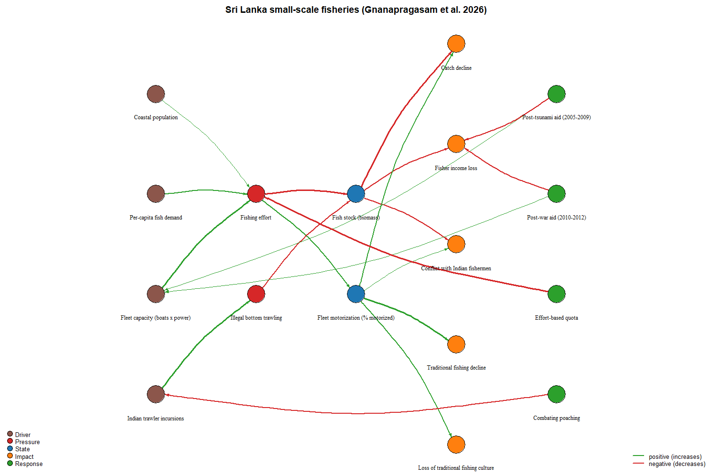
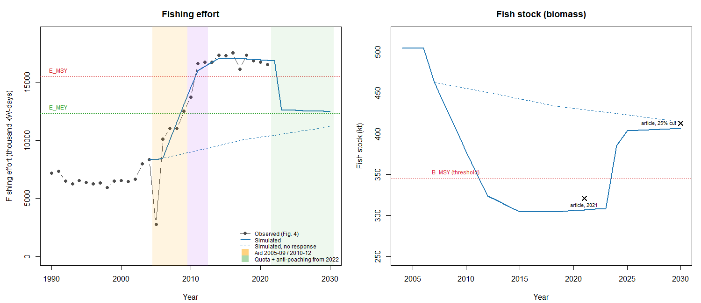
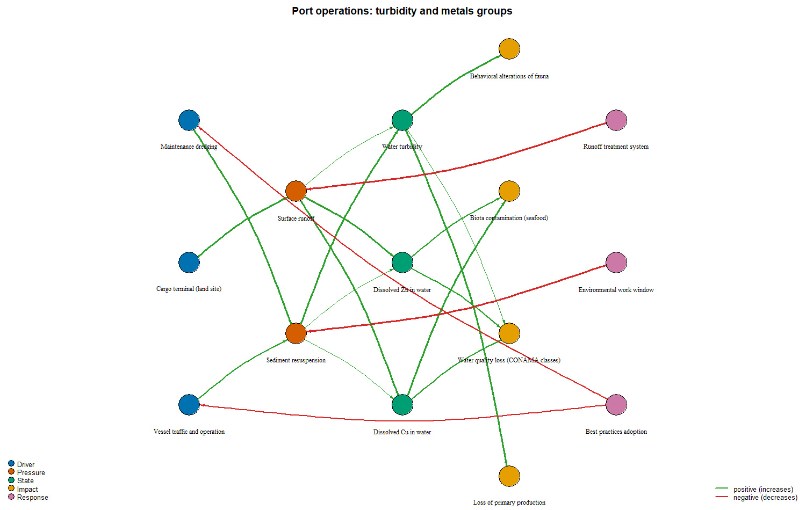
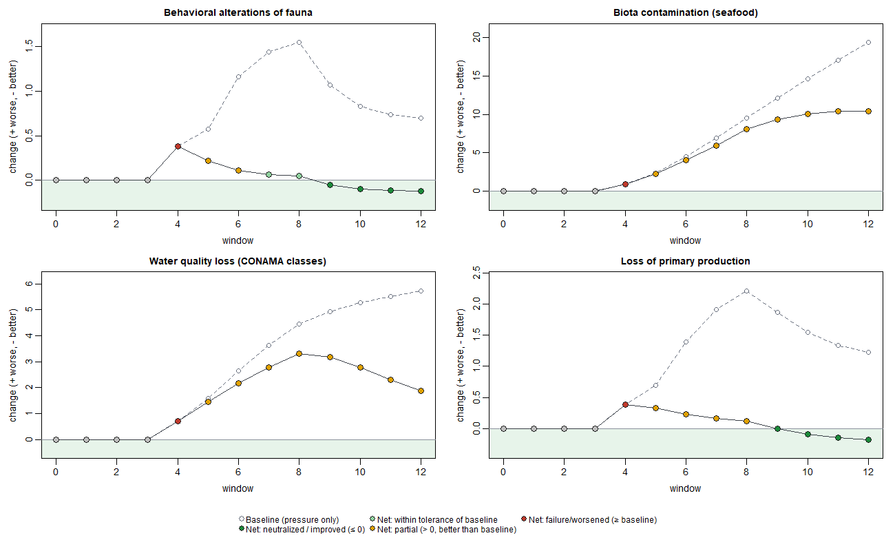

Running the app
Pick whichever of these matches what you're doing today — a one-off look, or ongoing work you'll want to keep and update.
Quick look, no setup
Runs the current main branch straight from
GitHub. Nothing is kept on disk after you close R.
shiny::runGitHub("iDPSIR", "gfonseca-unifesp", "main")
Keep a working copy
Clones the repo so you can update it later and it opens cleanly as an RStudio project.
git clone https://github.com/gfonseca-unifesp/iDPSIR.git cd iDPSIR
Then in RStudio: File → Open Project…, and run:
shiny::runApp()
install.packages() step needed. Both routes open a
browser tab with the app running locally — nothing is sent anywhere else.The wizard
Every project moves through six steps in order. Back and Next sit at the bottom of every step — Next is blocked with a short message if something's missing, so you can't accidentally skip ahead.
Start
Three ways in, pick one:
| Option | Use it when… |
|---|---|
| New project | You're starting from a blank network and will add nodes/edges by hand in the next steps. |
| Import matrices | You already have a nodes CSV (and optionally an edges CSV) matching the format below. |
| Load savepoint | You're resuming a project you saved earlier as a .idpsir.json file. |
Nodes CSV
One row per factor. id and
dpsir_category are the only columns that matter for the graph
to build — the rest can be left blank.
| Column | Value |
|---|---|
| id | Short unique code |
| label | Human-readable name |
| dpsir_category | Driver / Pressure / State / Impact / Response |
| subsystem | Optional grouping |
| descriptor | Optional free-text description of what this factor represents |
| self_regulation | Optional number in [0, 1], default 0.5 — the share of this factor's deviation that fades by itself each window; only used by the optional temporal simulation (see Self-regulation) |
| growth_rate | Optional number, default 0 — how the factor's base level moves by itself per time window (greater than −1) |
| growth_cap | Optional — the level (own units) where that growth stops, e.g. a licence cap |
| reference_value | Optional — the factor's initial level, in its own units (e.g. 100 t) |
| sd | Optional — its typical variation in the same units (standard deviation); with it, thresholds and pushes can be given in real units |
| threshold_level | Optional, State only — the level, in the factor's own units, at which it passes its effect on (see Scenarios below) |
| threshold_direction | Optional, auto (default: falling if the threshold is below the initial level, rising if above) or both |
id,label,dpsir_category,subsystem D1,Urban growth,Driver,Water P1,Wastewater discharge,Pressure,Water S1,Water quality,State,Water
Edges CSV (optional)
from/to must match ids from the
nodes CSV above; the rest can be left blank.
| Column | Value |
|---|---|
| from / to | Node ids this link connects |
| interaction_type | positive / negative — required, the sign has no default |
| weight | Optional strength (beta, see What you need to enter); blank = the class below, or Moderate (0.45) |
| strength_class | Optional: weak / moderate / strong |
| weight_low / weight_high | Optional uncertainty band of the strength |
| evidence_type | e.g. observational, monitoring |
| reference | Optional citation (DOI, URL, or plain text) backing this link |
from,to,interaction_type,weight,strength_class,evidence_type D1,P1,positive,,strong,expert_assessment P1,S1,negative,0.55,,monitoring
An older file with relative weights (e.g. 1–3)? Tick Convert from older relative weights on the import card — the static results stay exactly as before.
Model
This is the DPSIR schema — the five categories, the order they connect in, and how each is drawn. The default is what almost everyone should use as-is; it's shown here so the colors and shapes below make sense everywhere else in the app.
| Category | Order | Connects forward to | Role |
|---|---|---|---|
| Driver | 1 | Pressure | driver |
| Pressure | 2 | State | pressure |
| State | 3 | Impact | state |
| Impact | 4 | Response | impact |
| Response | 5 | Driver, Pressure, State, Impact | feedback |
Response is marked feedback: it's the only category allowed to connect back to earlier ones — the loop that makes a response actually change the system it responds to. "Advanced" options here let you swap the color palette or add extra levels, but most projects won't need them.
Add level asks for a name, a role and where to insert it. The role tells the engine what the level's factors are: one of the five above (two levels can share a role — e.g. a "Global driver" level before "Driver", both drivers) or a custom role such as a sub-driver, which sits in the chain (each level still connects only to the next one) but is none of the five. The levels after it move down one, so the order always stays valid. Remove selected level deletes a level that has no factors; a warning appears if no level plays one of the five roles.
Nodes
Add opens a form for one node at a time; Edit selected and Remove selected work on the row you've picked in the table.
| Field | What it means |
|---|---|
| id | A short, unique code (e.g. P1) used everywhere else to refer to this node. |
| label | The human-readable name shown on the graph and in tables. |
| dpsir_category | Driver, Pressure, State, Impact or Response — sets the shape, color and position on the graph. |
| subsystem | Optional grouping (e.g. "Fisheries", "Water") — lets you filter the Graph tab down to one part of the network. |
| descriptor | Optional — a short, plain-language description of what this factor represents. Purely documentation: not read by any calculation, just there so someone reading the network later (including a future you) doesn't have to guess what a node means. |
| self_regulation | Optional number in [0, 1], default 0.5. The share of this factor's deviation that fades by itself each time window: 0 = accumulates like a stock, 1 = no memory. The form shows a guide (half-life, build-up); see Self-regulation. Only used by the Scenarios tab's optional temporal simulation. |
| Growth rate and ceiling | Optional, default 0 / blank. How this factor's base level moves by itself each window (e.g. +0.8% for population growth), independent of any edge, and optionally the level where it stops (in the factor's own units; needs the initial level). Only used by the temporal simulation, where the trend runs in both the baseline and the scenario, even when the factor is not in the scenario. It is not self-regulation: self-regulation is how a deviation caused by the network fades, growth is how the base level itself moves. Without a typical variation (SD), the trend is measured as a fraction of the initial level. |
| Measurement (initial level, typical variation) | Optional. The factor's initial level in its own units (e.g. 100 t of stock) and its typical variation — a standard deviation, or a coefficient of variation that the form converts. The model works in standard deviations; with these two numbers, results, thresholds and pushes can be read and entered in real units (the Scenarios tab then offers "or, in units" next to each push, and the temporal simulation shows a Change relative to initial values table). |
| endpoint_class / value | Impact factors only. Endpoint class: ecological (default), ecosystem service or human welfare. A service or welfare Impact also gets a social value v (0–1); Elicit values (swing weights) on this step helps set it: rate how much it matters to take each one from its worst to its best level (100 for the most important). Used to prioritize Impacts on the Scenarios tab. |
| Threshold level and direction | Optional, State factors only, blank for most. The level, in the factor's own units, at which ALL of its outgoing links switch on together (e.g. the stock falling to 85 t) — before that, the State does not pass its effect on. Direction auto reads it from the initial level (below it = the State must fall, above = it must rise); either direction counts any move of that size. Used by both readings: in the sufficiency reading the State's deviation in the scenario decides it (a State triggers table shows whether the response closes a trigger the pressure opens), and in the temporal simulation it is checked window by window. Older files with a fraction (activation_threshold) are converted on load. Thresholded States get a thick border on the graph. |
Edges
An edge is a directed link, from one node to
another — it has to follow the connection order from the Model step
(a Pressure→Impact edge, skipping State, will be flagged in Review).
| Field | What it means |
|---|---|
| Strength | How many standard deviations the target changes when this factor changes by one (a standardized path coefficient, beta). No data? Pick a class — Weak (0.15), Moderate (0.45, the default) or Strong (0.80). With data, choose "I have a value" and enter beta — or r² instead (the form uses |beta| = √r²), optionally with the sample size n. Drawn as line thickness on the graph. |
| Uncertainty range | Lowest and highest plausible strength. Optional: otherwise it comes from r² and n, or from the class (Weak 0–0.3, Moderate 0.3–0.6, Strong 0.6–1.0). Used only by the confidence readings, never to shrink the effect. A wide range is drawn dashed. |
| interaction_type | positive (the link increases its target) or negative (it decreases/mitigates it) — colors the edge red or green and appears in its tooltip. |
| evidence_type | e.g. observational, expert_assessment, monitoring — where the link comes from, shown on hover. |
| reference | Optional — a DOI, URL, or plain citation backing this specific link. Shown on hover and, if you check "Edge references" on the Report tab, listed in a References section so a reader can trace any prediction back to its evidence. |
Review and build
A summary ("6 nodes, 7 edges") plus a plain-language list of anything invalid — usually an edge that skips a category. Fix those, then press Build/Rebuild graph. This is also the button to press again any time you go back and edit nodes or edges — the Explore tabs always show the graph as of the last build, not your unsaved edits.
The Explore tabs
Once the graph is built, four tabs cover everything from the visual layout to a downloadable report. They all read the same built graph — nothing here edits your nodes or edges.
Graph
The main view: every node placed in a column by DPSIR category, with arrows showing the direction of each effect. Controls live in collapsible boxes down the left — click a section's title to expand it — while the graph and its legend take up the wider space on the right.
Switch between Layered by category (the default — each DPSIR category gets its own column) and Circular (every node equally spaced around a ring, ignoring category) — the circular option often reads better for a network built mostly around one feedback loop, where a layered layout forces the closing edge to arc all the way back across the diagram.
Dragging a node pins it exactly where you drop it — it stays there through filter changes and survives saving/reloading the savepoint. "Reset dragged positions" (below the graph) clears every manual placement at once and goes back to the automatic layout.
Turn either legend off if it's taking up space you'd rather give to the graph itself, e.g. before saving a snapshot for the report.
By default the graph uses the palette set on the Model step (Okabe-Ito, colorblind safe, unless you changed it); pick another here to recolor this view only.
Hide everything outside one subsystem or time horizon, to focus on a slice of a large network.
Size nodes by how many connections they have (total, incoming, or outgoing), optionally weighted by edge strength — the more central a factor, the bigger it appears.
Line thickness by strength or by how narrow its uncertainty range is ("confidence"); a slider sets how wide the range can get before a link is drawn dashed instead of solid.
Horizontal/vertical spacing and overlap avoidance for legibility on dense networks, plus separate font sizes for labels and the legend.
Pick a start and end category (e.g. Driver → Impact) and the app lists the causal chains between them that follow the DPSIR order (never passing through a Response), ranked by their effect — the product of the signed strengths along the chain, i.e. the indirect effect of that path — pick one and everything else on the graph fades to grey. DPSIR descriptors (Metrics tab) lists every Driver-to-Impact chain with its effect, sign and uncertainty band.
Switch from coloring by DPSIR category (the default) to Community — a cluster of nodes more tightly connected to each other than to the rest of the network, often a sub-system acting together (say, everything tied to one fishery) even if it spans several DPSIR categories. Doing so reveals an algorithm dropdown (Louvain, Walktrap, Infomap, Label Propagation — they can disagree on the exact grouping, so it's worth comparing more than one) and redraws the graph with one color per community, edges included, plus a membership table below. Every filter and display setting above applies the same way in both coloring modes.
Click a node on the graph to select its row below, or vice versa — useful for finding a node's full detail without hunting across a busy layout.
Scenarios
Tests "what if we implemented this response, and how hard?" — without touching your saved network. Two independent "pushes" you build side by side: what's pushing the system to get worse, and how you're responding to it.
Optional. One row per Driver/Pressure node — turn on any combination you expect to worsen, and how strongly. A push of 100% is one standard deviation of that factor; the slider goes up to 500%, and a factor with a typical variation (SD) also takes the push in its own units ("or, in units").
One row per Response node — turn on any combination you want to test, and how strongly each is implemented.
Runs both scenarios and shows "Is the response enough? (sufficiency)" — for each Impact, how much the pressure scenario worsens it, how much the response scenario mitigates (or, sometimes, worsens) it, whether that's enough to neutralize the worsening, and how strong the response would need to be if not. The effect is the product of the edges' strengths along each causal path, summed over paths. Simulations (confidence) (100, 300 or 1000) sets how many resamples the confidence and prioritization tables use — fewer is faster, more gives steadier percentages.
Every response in the network, evaluated alone at full strength against the same pressure scenario: the percentage of simulations — resampling every edge's strength within its uncertainty range — in which that response alone neutralizes each Impact. A first row, Planned scenario (as set), does the same for the scenario exactly as configured with the sliders — the confidence of the verdict shown in the sufficiency table. Impacts the pressure does not reach show "—".
Each State with a threshold: its deviation under the pressure alone and with the response, whether its trigger is open before and after, and whether the response closes it. A closed trigger holds back everything beyond that State — which is why an Impact can be neutralized "by the trigger" rather than by mitigation, and why Reach also reports how many factors this scenario actually reaches.
Which Impact to act on first. Relevance = value v × importance D (how much the pressure scenario moves that Impact, relative to the most affected one) × reliability (how often that prediction keeps its sign when every strength is resampled within its range). Priority = relevance × gap (the share of the worsening the response scenario leaves uncovered — 0 when neutralized). An Impact the pressure doesn't worsen reads "Not affected". Downloadable as CSV and included in the report.
How many factors — and how many Impacts — the active response(s) can touch by following the network's links. Independent of the sufficiency reading above: it's a plain count of what's reachable, always available.
Runs the same two scenarios forward window by window instead of reading a single instant (click Run simulation after changing any of its settings) — useful when a response might, windows later, become a new pressure itself (see the worked example). Pressure and response each run as Added every window (default), Applied once and held (window 1 only; the level it creates fades only through self-regulation) or For a number of windows (a start window and a duration per factor — e.g. an aid programme that ran for five years). When a factor has a growth rate, Apply growth trends even to factors outside the pressure scenario (on by default) moves its base level in both runs, and Edge intensity by window shows what each link out of a growing factor or a thresholded State passes on in each window (downloadable as CSV). Simulation length: until the response neutralizes the Impact (default, up to 50 windows — it stops at the first window in which every Impact the response reaches, and that is worsened in either run, is at or below zero or within the neutralization tolerance of its baseline; otherwise it says "Not neutralized within N windows") or a fixed number of windows; with a growing trend a neutralization may not last, so Continue after neutralizing keeps running N more windows. Optional: a neutralization tolerance (default 5% of the baseline; a net value at or below it is labelled "Neutralized (relative)" and counts as neutralized for the stop — set 0 to require zero), and a baseline without any response (ignoring Impact → Response links). With a thresholded State, a Trigger criterion: accumulated State level (default — has the State deviated beyond the critical point, adding up every window?), load arriving at the State (did what arrived in this window pass the limit?), or compare both; a table then shows each trigger open or closed window by window. Factors with an initial level get a Change relative to initial values table, in their own units, with the window in which a threshold was crossed. A progress indicator shows "Window X of N" while it computes. Shows a table of how each Impact changes window by window, with a Verdict per row (see Reading the Verdict), and a chart — one panel per Impact, dashed baseline vs. solid Net, each Net point colored by that window's Verdict, with the neutralized zone (Net ≤ 0) shaded — downloadable as PNG or SVG and included as a figure if this scenario is added to the report.
Keeps the result, with its temporal settings, for the rest of the session (not written to disk) so you can build several scenarios and compare them. The scenario currently on screen, including its temporal settings, is saved in the savepoint.
Pick two or more saved scenarios; shows "Reach per scenario" side by side, with the baseline (no response applied, reach always 0) as the reference row.
Metrics
Three sub-tabs, from the whole-network summary down to the DPSIR-specific view.
| Sub-tab | What's in it |
|---|---|
| General | Node/edge counts, density (how well-connected the network is overall), diameter, transitivity, modularity, and component count. |
| Centralities | Degree, betweenness, closeness, PageRank and eigenvector centrality per node — toggles for directed/undirected, normalized/raw and weighted, plus CSV/Excel export. |
| DPSIR descriptors | Node counts and edge transitions per category, a category × category matrix, flagged Impacts without a Response and Pressures not covered by a Response, and every Driver-to-Impact pathway with its effect. |
Centrality scores answer "which factor matters most, and by what measure" — degree counts direct connections, betweenness flags factors that sit on the most causal paths between others, and PageRank weighs a factor by how important the things pointing at it are.
Report
Builds one self-contained HTML file you can email or archive — pick the sections, download, done. Every report opens the same way regardless of what you check: a "Report summary" (network name, author, savepoint file, and each selected scenario's pressure/response/c definition) and a short "How to read these results" legend (sign convention, what "neutralized" means, the Verdict color key) — then Response sufficiency, Reach and Temporal simulation for whichever scenarios you selected, References if you checked it, and a "Network characterization (appendix)" at the end holding the network graph image, general metrics, centralities and DPSIR descriptors — the descriptive, not-result-specific material, demoted to the back so the decision-relevant sections come first.
Network graph image, general metrics, centralities, DPSIR descriptors, edge references, reproducibility info — check whichever apply (all end up in the "Network characterization (appendix)" section at the back, except references, which gets its own section). "Edge references" adds a References section listing every edge that has one (Edges step), so a reader can trace a prediction back to its evidence. "Reproducibility info" adds the R and package versions used to generate the report, plus the exact parameters behind the "how confident is that" figures (including the fixed random seed) — regenerating the report from the same savepoint reproduces the same numbers.
Any saved scenarios from the Scenarios tab — the baseline is added automatically once you pick at least one. "Include temporal simulation" adds each selected scenario's window-by-window table and per-Impact line chart to the report; off by default (it makes the file noticeably larger).
One file, openable in any browser, no other software needed.
Modeling convention: orienting nodes and reading signs
The app never guesses whether "more" of a factor is good or bad —
that's a decision you make when you name a node and sign its edges. Get this
right and consistent, and every reading downstream (sufficiency, confidence,
temporal Verdict, the temporal chart's colors) is trustworthy. Get it inconsistent,
and a table can report the opposite of what you intended without any error or
warning — the app validates that a sign is positive or
negative, not that it means what you think it means.
Step 1 — orient each node: decide what "more" means
| Category | What "more" means | Example |
|---|---|---|
| Driver / Pressure | More force or stress — more is more pressure. | fishing effort, population growth |
| State | The condition itself, measured in its natural/good sense — more is a better condition. | Coral cover, Fish stock, Biodiversity — never Coral degradation or Fish stock decline |
| Impact | The problem or damage itself — more is worse. | Catch decline, Fisher income loss |
State is the one category worth pausing on: name it as a neutral measurement, not as the problem it's usually associated with. A State named after a problem ("Fish stock decline") quietly bakes a sign assumption into the node itself — one that can silently drift out of sync with whatever the edges actually say.
Step 2 — the edge's sign is mechanical
Once every node is oriented, signing an edge is a small, mechanical question:
when the source goes up, does the target go up (positive) or down
(negative)? Nothing about "good" or "bad" enters at this step — that
judgment already happened in Step 1, when you chose what "more" means for each
node. With the standard orientation above, the connections this app's schema
allows always sign the same way:
| Link | Sign | Why |
|---|---|---|
| Driver → Pressure | positive | more force → more pressure |
| Pressure → State | negative | the pressure reduces the good condition |
| State → Impact | negative | more good condition → less of the problem |
| Response → Driver / Pressure | negative | the response reduces the force/pressure |
| Response → State | positive | the response improves the condition |
| Response → Impact | negative | the response reduces the problem |
sample_nodes.csv/sample_edges.csv's own history for a
worked example of exactly this mistake, and the Mangi network below for what a
consistent, neutral State looks like in practice.Reading the Verdict (temporal simulation)
With an Impact oriented as the problem (Step 1 above): zero means no deviation from doing nothing, a positive value means worse, and a negative value means better than doing nothing — the response didn't just help, it pushed the factor past neutral. Each simulated window compares the baseline (pressure only) against the net (pressure and response together, the same "Net" column the sufficiency table above already uses for this quantity) and labels the Impact's net value accordingly:
| Verdict | Condition | Meaning |
|---|---|---|
| Not affected | baseline ≈ 0 and net ≈ 0 | the pressure has not reached this Impact (yet) — nothing to neutralize. Window 0 shows "—". The sufficiency table uses the same label when the pressure does not reach an Impact in a single instant; such Impacts stay out of the confidence and the prioritization |
| Neutralized | net ≈ 0 | the response's benefit exactly offsets the pressure's worsening |
| Improved beyond neutral | net < 0 | the response did more than enough — the factor is better than if nothing had happened at all |
| Neutralized (relative) | 0 < net ≤ tolerance × baseline | practically neutralized: within the tolerance (default 5%) of the baseline. "Until neutralized" stops here too; a tolerance of 0 turns the label off |
| Partial | 0 < net < baseline | still a problem, but smaller than it would be without the response |
| Failure/worsened | net ≥ baseline | as bad as, or worse than, no response at all |
The Verdict is judged by sign, not by
how large a number is — a response that overshoots into strongly negative
territory is Improved beyond neutral, never
Failure/worsened, no matter how big that negative number gets. This
also keeps the label consistent with the temporal chart's color: green always means
neutralized or better (net ≤ 0), so a row marked worse can never show up green.
Self-regulation: how a factor recovers on its own
self_regulation (0–1, default 0.5) is the share of a factor's
deviation that fades by itself each window, independently of the network:
0 = nothing fades and everything that arrives accumulates (a stock with no
replenishment, a persistent contaminant); 0.3 = 30% of the deviation fades each
window (a population rebuilding, a habitat regenerating); 1 = no memory, the
factor only reflects what arrives in the current window.
Each window: new value = (1 − self_regulation) × previous value + what arrives through the edges + the push.
Example — fishing effort (P) → fish stock (S) → catch decline (I), with strengths 0.7 and 0.6 (both negative) and a pressure of 1 standard deviation:
| Case | Window 2 | 4 | 8 | 12 |
|---|---|---|---|---|
| Ongoing pressure, self-regulation 0 everywhere — fish stock | −0.70 | −4.20 | −19.6 | −46.2 |
| Ongoing pressure, stock recovers 30% per window — fish stock | −0.70 | −1.53 | −2.14 | −2.29 (settles at −0.7 ÷ 0.3 = −2.33) |
| Ongoing pressure, self-regulation 1 everywhere — fish stock | −0.70 | −0.70 | −0.70 | −0.70 (same as the static reading) |
| One-off pressure, stock recovers 30% per window — fish stock | −0.70 | −0.34 | −0.08 | −0.02 (back to normal) |
Under a constant load, a factor settles at load ÷ self-regulation: a contaminant with self-regulation 0.05 accumulates up to 20 times what arrives each window, which is how a small per-window pressure can still cross a threshold through accumulation.
| Self-regulation | Half-life of recovery | Build-up at equilibrium | Typical of |
|---|---|---|---|
| 0.05 | 13.5 windows | 20× | contaminant in sediment |
| 0.10 | 6.6 windows | 10× | reef recovery, long-lived species |
| 0.30 | 1.9 windows | 3× | short-cycle fish stock |
| 0.50 (default) | 1 window | 2× | water quality that renews quickly |
| 1 | — | 1× | monthly income, catch in the window |
What makes an Impact converge is the chain's self-regulation; the response mode decides the effort; the stop criterion says in which window the problem was solved.
Example networks
Four ready-to-load networks ship with the app, each making a different point. Start with whichever matches what you need right now — a five-minute orientation, a real published network, the deepest example in the app, or a didactic case on prioritizing responses (the last two are covered in full in their own sections).
Fisheries — the smallest possible loop
Five nodes, five edges, one closed feedback loop: Coastal tourism growth (Driver) → Overfishing (Pressure) → Fish stock (State) → Fisher income loss (Impact) → Fishing quota policy (Response) → back to Coastal tourism growth. No subsystem filters, no temporal simulation needed to see what's going on — this is the network to open first, just to get oriented with the wizard and the Graph/Scenarios tabs before anything else adds complexity. Turn on Coastal tourism growth as pressure and Fishing quota policy as response, both at 100%: because it's a genuine loop, the response's Reach covers all 4 other factors — but with this network's edge strengths (three Strong links along the pressure chain, a Moderate Impact → Response link and a Weak Response → Driver link), a single response this far from the Impact isn't remotely enough on its own (Fisher income loss needs 667% strength to neutralize a 0.495 worsening with only -0.074 of mitigation) — a quick, honest first look at what "Strength needed" means when a response is badly outmatched.
Download the example
A ready-to-load savepoint. On the wizard's Start step, choose Load savepoint and pick this file.
example_fisheries.idpsir.json
Mangi et al. 2007 — a real published network, and a real bug it caught
18 nodes, 31 edges — coral-reef fisheries management in a real paper (Mangi, S.C., Roberts, C.M., & Rodwell, L.D. (2007). Reef fisheries management in Kenya: Preliminary approach using the driver-pressure-state- impacts-response (DPSIR) scheme of indicators. Ocean & Coastal Management, 50(5-6), 463-480, doi:10.1016/j.ocecoaman.2006.10.003). This is the network that caught a real, reproducible bug during development: the older equilibrium-based reading this app used to show (removed since, see Scenarios above) reported Gear restrictions as making Reef ecosystem degradation worse — the wrong sign for a response explicitly meant to protect the reef. Loading this network and applying pressure from Coastal population growth + Market demand for reef fish, with Gear restrictions as the response, shows the corrected sufficiency reading: Reef ecosystem degradation reads worsening 0.03 / mitigation -0.069 / net -0.039, Yes, neutralized at 44% strength — mitigation with the right sign, not the wrong one. It's also a good look at a densely cross-linked network: this single response's Reach covers 14 of the other 17 factors, because Responses here loop back into several Drivers, Pressures and States at once, not just the one Impact they're aimed at.
This network is also
the concrete illustration of the modeling convention
above: every State is a neutral measurement —
Fish stock, Coral cover,
Biodiversity — never pre-judged as "decline" or
"degradation", so Pressure→State and State→Impact are both
negative and Response→State is positive, exactly the
standard signing from Step 2 above.
Download the example
A ready-to-load savepoint, pressure and response scenario already configured.
example_mangi.idpsir.json
Or the underlying tables
The same network as plain CSV — useful as a template for your own CSV import.
mangi2007_nodes.csv
mangi2007_edges.csv
Gnanapragasam et al. 2026 — the deepest example in the app
17 factors, 20 links, one window per year from 2004: Sri Lanka's small-scale fisheries, parametrized from the paper's own data (the fishing-effort series, a Gordon-Schaefer stock model, the recommended effort cuts). Post-disaster aid restores fishers' income and, through the boats it buys, drives effort up and the stock below BMSY; the paper's effort quota brings it back. The full walkthrough is the next section.
Download the example
Jump to the full walkthrough below for how to use it.
example_gnanapragasam.idpsir.json
Or the underlying tables
The same network as plain CSV.
gnanapragasam2026_nodes.csv
gnanapragasam2026_edges.csv
Port operations — prioritizing responses (didactic)
15 factors, 20 links, one window per season: a port where dredging clouds the water and the cargo terminal's runoff carries metals. Built to show how the relevance of the Impacts, not just the size of the damage, points to which response to fund first — and that one response is only needed during the dredging campaign. Full walkthrough in its own section.
Worked example: the aid that became a pressure
This network is built from a published study — Gnanapragasam, Ratnasiri & Fleming 2026, Marine Policy 189, 107095, on Sri Lanka's small-scale fisheries — and parametrized from its own numbers: 32 years of fishing effort, a Gordon-Schaefer model of the stock, and the effort cuts it recommends. One window is one year, starting in 2004. It shows the three things the temporal simulation adds to the static reading: growth trends, pushes that last a set number of years, and a threshold crossed by accumulation.
Download the example
On the wizard's Start step choose Load savepoint. The scenario below (2005–2030) is already configured.
example_gnanapragasam.idpsir.json
Where every number comes from
Each value and its source, the effort series digitized from the paper's Fig. 4, and the script that builds the tables.
gnanapragasam2026_parameters.csv
gnanapragasam2026_effort_observed.csv
The story
Fishing effort in Sri Lanka rose 130% between 1990 and 2021. The paper traces most of it to livelihood aid: after the 2004 tsunami (2005–2009) and the end of the civil war (2010–2012), donors replaced — and over-replaced — boats and gear. The aid was meant to restore fishers' income, and it did; it also grew the fleet, the fleet's effort pushed the stock below the level of maximum sustainable yield, and catches fell from 2014. The paper's own answer is an effort-based quota: 5% less effort brings it to MSY, 25% to the economic optimum (MEY). Illegal trawling by Indian boats adds pressure throughout.

How it was parametrized
| Factor or link | Value | Source |
|---|---|---|
| Fishing effort | 8,328 thousand kW-days in 2004; SD 4,877 | Fig. 4, digitized (1990–2021) |
| Fishing effort → Fish stock | −0.82 (band 0.62–1.03) | √r², r² = 0.68, n = 32 years |
| Fish stock | 504 kt in 2004; SD 109 kt; threshold 345 kt (BMSY), falling | Gordon-Schaefer: K = 690 kt, B(E) = K(1 − E/30,924) |
| Per-capita fish demand | +2.3% per year, ceiling 31 kg | Doubled in three decades, peaked at 31 kg in 2016 |
| Coastal population | +0.8% per year | National statistics (not in the paper) |
| Fleet capacity | +1% per year; self-regulation 0.02 (boats persist) | Effort trend 1990–2004, before the aid |
| Post-tsunami aid → Fleet capacity | 0.345, windows 1–5 (2005–2009) | Calibrated to Fig. 4 |
| Post-war aid → Fleet capacity | 0.085, windows 6–8 (2010–2012) | Calibrated to Fig. 4 |
| Effort-based quota → Fishing effort | 1 (cuts effort directly); 85% = 4,145 thousand kW-days ≈ 25% | Table 4 (5% = MSY, 25% = MEY) |
| Other links | weak 0.15 / moderate 0.45 / strong 0.80 | Qualitative in the paper (Table 2) |
Two choices are worth knowing. States whose strengths come from an equilibrium
relationship (the Schaefer stock, the motorized share) keep self-regulation 1: in
the temporal simulation a link passes its strength every window, and a factor with
self-regulation s settles at strength ÷ s, so anything below 1 would
inflate them. And the stock's threshold is BMSY, from the paper; the usual
collapse limit (half of BMSY, a management convention) was tried first
and is never crossed at realistic levels, so the stock would never reach its
Impacts. One State breaks the neutral-name default on purpose: Fleet
motorization is oriented "more is worse" (more motorized capacity is more
pressure), so all its links are positive — still consistent with the
golden rule, since the orientation holds for every one of
its links.
Does the model reproduce what happened?
Before asking about policy, check the replay. Open Scenarios, click Apply scenario, then open Temporal simulation and tick Show temporal simulation. The responses run For a number of windows: each aid only in its own years, the quota and anti-poaching from 2022 (window 18). The table Change relative to initial values gives effort and stock in their own units.

| Simulated | Paper | |
|---|---|---|
| Effort, 2005–2021 | follows the series (R² = 0.93) | Fig. 4 |
| Stock falls below BMSY | 2012 (window 8) | catch passes HMSY in 2012, falls from 2014 |
| Stock in 2021 | 307 kt | ≈ 321 kt (Schaefer equilibrium, Table 4) |
| Effort in 2030 with the 25% quota | 12,470 | EMEY = 12,287 |
| Stock in 2030 with the 25% quota | 406 kt | 413 kt (Table 4) |
Without any response (dashed lines) effort only creeps up with the growth trends (to about 11,200 by 2030) and the stock never drops below BMSY: in this model, the overfishing is the aid's doing.
Growth: the world moves even outside the scenario
Three factors have a growth rate: population (+0.8%/year), per-capita demand (+2.3%/year) and fleet capacity (+1%/year). None of them is in the pressure scenario, yet their base level moves in both runs — with and without the response — because Apply growth trends even to factors outside the pressure scenario is ticked. Demand stops at its 31 kg ceiling in 2017 (window 13): in Edge intensity by window, the link demand → effort grows 0.010, 0.021 … then stays at 0.144. That table is the place to see growth at work: each link out of a growing factor passes a little more every window, in proportion to (1 + growth rate), never compounding twice.
The aid: fixed income while it lasted
| Fisher income loss | No response | With the scenario | Verdict |
|---|---|---|---|
| 2012 (window 8) | 0.00 | −0.45 | Improved beyond neutral |
| 2021 (window 17) | 0.00 | 0.82 | Failure/worsened |
| 2030 (window 26) | 0.00 | 0.00 | Neutralized |
While the aid ran it pushed income loss below zero. After 2012 it stopped, but the boats it bought stayed (fleet capacity has self-regulation 0.02), effort stayed on its plateau, and once the stock crossed BMSY its trigger opened and income loss, catch decline and conflict all started to rise — in 2021 income loss is worse than with no aid at all. The quota and anti-poaching from 2022 bring the stock back above BMSY, the trigger closes, and income loss is neutralized by 2030. The other Impacts improve too but stay above the no-response run, because the motorized fleet the aid built does not go away.
A threshold worth knowing about
Apply the scenario and look at the static State triggers table: Fish stock (biomass), threshold 345 kt (falling) = −1.46 SD, deviation −0.36 with the pressure alone, closed before and after. In a single instant, illegal trawling does not overfish the stock — so the static reading shows no worsening for any Impact — every row reads Not affected. The problem only appears over time: the fleet's effort accumulates year after year, the stock crosses BMSY in 2012, and from then on the stock's effects switch on. This is the case the Trigger criterion exists for: by accumulated level (the default) the trigger opens; a single window's load never gets there.
Try the paper's smallest option: give the quota 827 thousand kW-days (the 5% cut that brings effort to MSY) in its or, in units field, instead of the 85% slider. The stock only reaches about 327 kt by 2030 — still below BMSY — and the trigger stays open; with anti-poaching too it reaches about 345 kt, right at the threshold. The paper's own conclusion — a modest cut is a start, the MEY cut restores the stock — comes out of the model.
Worked example: which response, and when?
A port has three things going on at once, and a limited budget. This didactic network shows how the app turns that into a decision: the prioritization says which Impact to deal with first — weighing how much each one matters, not only how much it worsens — and the temporal simulation says when each response has to be active.
Download the example
Load it on the Start step (Load savepoint). Scenario 1 is set up, and four scenarios are already saved (they are rebuilt when you build the graph).
example_port.idpsir.json
The story
Two groups of Impacts run through the same port:
- Turbidity — maintenance dredging and ship traffic put sediment back in suspension, the water turns turbid, fauna changes its behaviour and phytoplankton loses light (primary production). Turbidity clears within a season or two (self-regulation 0.7).
- Metals — rain washes the cargo terminal, and the runoff carries dissolved zinc and copper, which contaminate fish and shellfish and push the water out of its CONAMA quality class. Metals persist (0.2) and biota accumulates them (0.1).
Three responses are available: a runoff treatment system (acts on the metals), an environmental work window that restricts dredging to the least sensitive period (acts on turbidity), and generic best practices (a little of both, weakly). Dredging happens in a campaign (windows 3 to 5); runoff and traffic never stop.

Not all Impacts weigh the same
Each Impact has a class and a value v (Nodes step; Elicit values (swing weights) helps set it):
| Impact | Class | Value v | Why |
|---|---|---|---|
| Biota contamination (seafood) | welfare | 1.0 | people eat it |
| Behavioral alterations of fauna | ecological | 1 (always) | ecological endpoints count in full |
| Water quality loss (CONAMA classes) | welfare | 0.6 | legal compliance |
| Loss of primary production | service | 0.4 | a supporting service, partly compensated elsewhere |
Step by step: follow the priority
Open Scenarios and click Apply scenario. The pressure is all three Drivers at 100%; the response is only best practices. Look at Impact prioritization: priority = relevance × the share of the worsening the response leaves uncovered.
| Responses applied | Top priority (value) | What it points to |
|---|---|---|
| 1. Best practices only | Biota contamination (0.90), then fauna behaviour (0.52) | the metals: add the runoff treatment |
| 2. + Runoff treatment | Fauna behaviour (0.43) | the turbidity: add the work window |
| 3. + Work window | none — all four Impacts neutralized | — |
Change the response scenario to match each row and apply again. Two things to notice. First, primary production is worsened as much as fauna behaviour (0.90 each) but is always last (0.21 in step 1): with v = 0.4, it matters less to the people who set the values. Second, each step points to a different response, because each response reaches a different group of Impacts — the prioritization is what connects an Impact to the response that covers it.
When: one response has a season, the other has no end
Open Temporal simulation, tick Show temporal simulation and click Run simulation. Pressure and response run For a number of windows: dredging in windows 3–5, runoff and traffic always. Compare the saved scenarios on the Report tab (include the temporal simulation):
- 3. + Work window during dredging — the work window is active only in windows 3–5, yet fauna behaviour peaks at 0.29 instead of 1.55 without any response, and returns to zero after the campaign. Keeping it all year only pushes the factors "beyond neutral": effort with no remaining problem to solve.
- 4. Runoff treatment starts late — the same responses, but the runoff treatment only from window 6. The seafood contamination climbs to about 10 and stays there (about 0.1 when the treatment starts in window 1): contamination accumulates in the biota, so this response has to start early and never stop.

The lesson the network gives, in one line: fund the runoff treatment first and keep it running; add the work window only for the dredging campaigns — and leave primary production as the last concern, not because it is small, but because it weighs less.
Saving and resuming
Save savepoint (.idpsir.json) sits at the bottom of every step of the wizard — one file holding your schema, nodes, edges and layout, plus the scenario currently set up on the Scenarios tab (with its temporal settings). Reload it later from the Start step's Load savepoint option to pick up exactly where you left off. The scenarios you saved are included too (their settings, not their results): they are recomputed after you build the graph, and appear again under Saved scenarios and on the Report tab. A savepoint from an older version of the app is converted to standardized strengths on load, keeping its static results exactly the same.
Quick glossary
- Driver
- An underlying human activity or need, e.g. urban growth, tourism, agriculture.
- Pressure
- What that activity puts on the environment, e.g. wastewater discharge, overfishing.
- State
- The resulting condition of the environment, e.g. water quality, fish stock levels. Convention: name it as a neutral measurement ("Fish stock", not "Fish stock decline") — the direction (good/bad) belongs on the edges, see Modeling convention.
- Impact
- The consequence of that state, e.g. biodiversity loss, public health risk.
- Response
- A policy or management action addressing any earlier stage in the chain.
- Density
- How many of the possible connections in the network actually exist — higher means a more tightly linked system.
- Centrality
- A family of scores for "how important is this node," measured in different ways (see Metrics above).
- Community
- A cluster of nodes more connected to each other than to the rest of the network.
- Sufficiency
- Whether a response scenario's mitigation on an Impact is enough to neutralize a pressure scenario's worsening — the primary Scenarios reading, always well-defined regardless of the network's structure.
- Neutralized
- An Impact's net effect (worsening + mitigation) is zero or negative — the response fully covers the pressure's worsening on that Impact. A positive net, even a small one, means "No." When the pressure does not reach the Impact at all, the verdict is Not affected instead.
- Temporal simulation
- An optional reading that runs a scenario forward window by window (discrete time steps) instead of reading a single instant — useful for seeing whether a response's benefit holds up or erodes over time.
- Verdict
- The temporal simulation's per-window label for an Impact — Not affected, Neutralized, Improved beyond neutral, Neutralized (relative), Partial, or Failure/worsened — judged by the sign of the net's value, not its size. Not the same thing as sufficiency's "Neutralized" above; see Reading the Verdict.
- Strength (beta)
- How many standard deviations an edge's target changes when its source changes by one. Entered as a value, as r², or as a class (Weak 0.15 / Moderate 0.45 / Strong 0.80).
- Self-regulation
- The share of a factor's deviation that fades by itself each window (default 0.5) — e.g. a habitat that recovers. Only affects the optional temporal simulation, not the main sufficiency reading. See Self-regulation.
- Priority
- Relevance of an Impact (its social value × how much the pressure moves it × how reliable that prediction is) times the share of its worsening the response leaves uncovered.
- Reach
- How many factors — and how many Impacts — a response's influence can touch by following the network's links, independent of both the sufficiency and temporal readings.